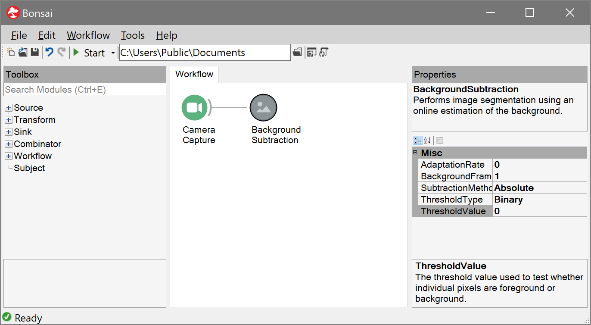
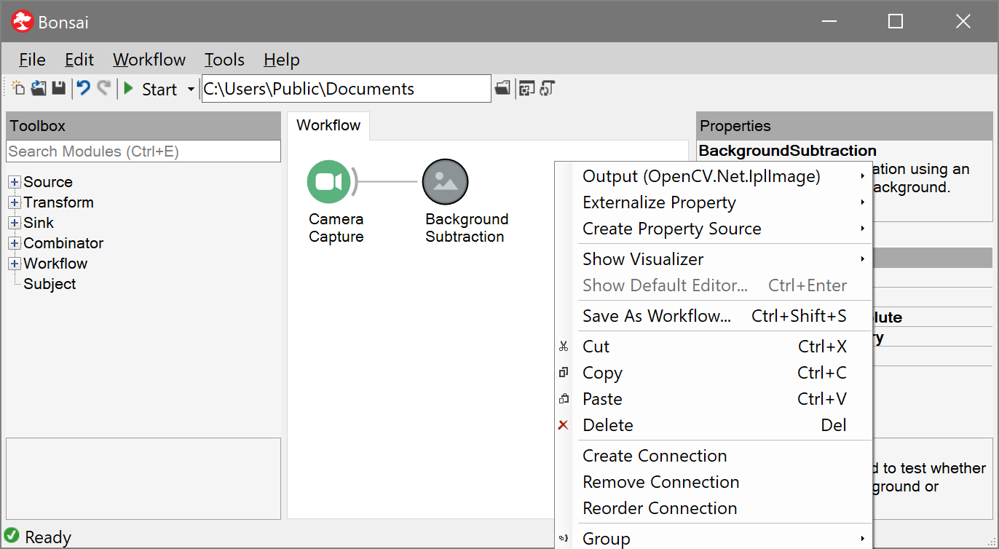
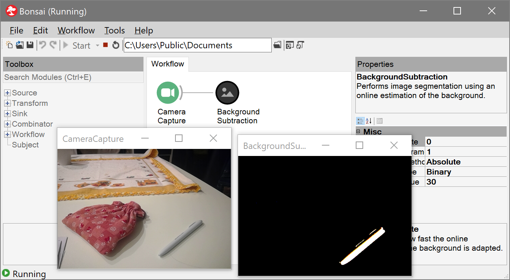

Workflow Editor
When Bonsai starts you will be taken directly to the workflow editor. This is where you can create, configure, and run Bonsai workflows. The editor is composed of three main panels: the Toolbox, the Workflow, and Properties. These are described in more detail below.

Toolbox
The Toolbox allows you to search for available Bonsai operators to place in the workflow. The listing is organized into five main categories:
| Category | Description |
|---|---|
 |
generate event streams from devices or files |
 |
convert or process individual data items |
 |
save data or trigger external outputs |
| manage control flow or synchronize parallel inputs | |
 |
reusable workflow fragments stored in .bonsai files |
Operators inside each major category are further organized by package namespaces. These namespaces come from the packages you have installed at any given moment. The name of each namespace can give you a hint about what kind of operations or devices can be accessed inside (e.g., the Audio namespace provides access to audio capture devices or WAV file readers).
Once you have found which operator you want to insert, you can place it by double-clicking, dragging it to the workflow or alternatively right-clicking and selecting a specific placement option. See the Commands and Shortcuts section for more information.
Search Operators
Another way to quickly find operators is to use the Search textbox. Any text inserted here is matched against available operator or namespace names for a match in any order. This means you can search not only for a specific operator name but also by category names to locate all the operators in a namespace (e.g., try typing Arduino).
Note
You can also directly type and search for operator names when the Workflow panel has the input focus. This allows you to simply start typing an operator name and directly select which operator you want with the up/down arrow keys. Once you have the right operator, press the Enter key to place it. You can repeat the process multiple times to very quickly chain a sequence of operators.
Workflow
The Workflow panel is where you place reactive operators to create data processing pipelines or other asynchronous computations. Each operator in Bonsai is represented by a circular node. Nodes can be connected together, forming a directed feedforward graph from left to right. Connections indicate which operators receive data from which other operators (see the Introduction and the Language Guide for an extended discussion).
The most useful action to learn your way around the Workflow panel is right-clicking. This will bring up the context menu for the specific node you selected, or a list of possible actions you can do with the current selection:

If only one node is selected, the Output menu item will display the type of the elements emitted in the observable sequence of that operator.
Note
If the output of an operator is a complex type, you can also inspect its public data members from the context menu. Clicking on any one of these members will automatically place a new MemberSelector transform which selects that member from the output.
The context menu also allows you to externalize public properties of the operator into explicit nodes in the workflow, so you can change their values dynamically based on the output of other nodes (see the Property Mapping section for more information).
Finally, it is possible to group nodes, both for organizing large workflows, and to define higher-order operators. The most basic grouping is the nested workflow which allows you to encapsulate a workflow fragment inside a single node. This NestedWorkflow can be assigned a Name and Description for ease of reference. Any named properties which are externalized by nodes in the group will be shown as properties of the NestedWorkflow so you can literally treat the group as a single node.
Note
You can use NestedWorkflow nodes to document your workflow by adding names and descriptions to individual processing branches. No additional processing cost is incurred by the use of NestedWorkflow nodes.
Type Visualizers
Type visualizers allow you to inspect online the data that is generated by any specific node during the execution of the workflow. They are useful to debug the result of image or signal processing operations or to debug the behaviour of the workflow itself.

Types can have more than one visualizer. You can choose the active type visualizer for a specific operator by right-clicking on the corresponding node and selecting from the available options in the Show Visualizer menu.
For example, image streams can be displayed on the screen using the default image visualizer, but you can also select the text visualizer to access image parameters such as size, or pixel bit depth. New visualizers can be added by installing new packages.
If you leave one or more visualizers open when you stop the workflow, Bonsai will memorize the position and size of each active window. When you run the workflow again, the same visualizer windows will be opened following the memorized layout. Bonsai stores these settings in a .layout file which is saved side by side with the workflow so they will persist between editor sessions.
Note
Many visualizers allow you to access more detailed information or advanced configuration parameters by right-clicking on the visualizer window.
Snippets
You can create and save workflow snippets by selecting one or more nodes and clicking the Save Snippet As... button in the context menu.
Snippets are a powerful way to reuse common workflow patterns across projects. When you save a new snippet file it will immediately show up in the Toolbox panel for placement. Placing a snippet is equivalent to copying the workflow fragment stored in the snippet file into your current workflow.
It is possible to organize snippets into folders so you can search them by keyword, similar to the role of namespaces found in compiled Bonsai packages.
Properties
Each Bonsai operator exposes a set of configuration properties that parameterize the operator's behaviour (e.g., the Timer operator exposes the period between generated values, whereas a Threshold on images exposes the brightness cutoff value applied to individual pixels).
The Properties panel will display all the configuration properties which are available for the currently selected operator. A summary description of the currently selected property can be found in the textbox at the bottom of the panel. Similarly, a description of the behaviour of the currently selected operator itself is shown at the top of the panel.
Most properties can be configured simply by changing the text value in the corresponding row of the property grid. Some properties have further specialized editors which can be accessed by clicking the drop-down or dialog button which will be displayed to the right of the property text.
Note
Some operators have even more specialized editor windows such as camera configuration dialogs or media player controls. If such property pages exist for the currently selected operator, the small Property Pages button above the property grid will become active.
Commands and Shortcuts
Below is a summary of the most used commands and shortcuts in the workflow editor:
Running the workflow
- Click the arrow
Startbutton - Press
F5
Stopping the workflow
- Click the square
Stopbutton - Press
Shift+F5
Insert an operator after the selected node
- Right-click the operator name and select the
Insert Afteroption - Drag-and-drop the operator from the toolbox to the worflow
- Double-click the operator name in the toolbox
- Press the
Enterkey while the operator is selected in the toolbox - Copy another node (
Ctrl+C) and paste in the toolbox (Ctrl+V)
Insert an operator before the selected node
- Right-click the operator name and select the
Insert Beforeoption - Hold the
Shiftkey together with any of the above commands (e.g.,Shift+Enter)
Insert an operator as a new branch of the selected node
- Right-click the operator name and select the
Create Branchoption - Hold the
Altkey together with any of the above commands (e.g.,Ctrl+Alt+V)
Create a connection between two operators
- Right-click the source node, select the
Create Connectionoption and left-click on the target node - Drag the source node and drop it on the target node
Remove a connection between two operators
- Right-click the source node, select the
Remove Connectionoption and left-click on the target node - While holding the
Shiftkey, drag the source node and drop it on the target node
Selecting multiple nodes
- Click an empty space in the workflow panel and drag a box around the nodes to be selected
- While holding the
Shiftkey, press the arrow keys to select a string of nodes around the currently selected node - Hold the
Ctrlkey and click on a node to add/remove it from the current selection
Note
Many operations can be performed on multi-node selections (e.g., delete, create connections, create a node group, etc.).
Open the type visualizer for an operator
- Double-click on the target node while the workflow is running
- Right-click on the target node and select a visualizer from the
Show Visualizerdropdown - Press
Enterwhile the target node is selected
Grouping operators into a node group
- Select all the nodes to group and press
Ctrl+Gto create a nested workflow - Right-click on a multi-node selection and select a group type from the
Groupdropdown context menu
Note
You can change the type of an existing group simply by right-clicking on the group node and selecting a different type from the Group dropdown.
Open a node group or the default editor for an operator
- Double-click on the target node while the workflow is not running
- If the workflow is running, hold the
Ctrlkey while double-clicking on the target node - Press
Ctrl+Enterwhile the target node is selected
Ungrouping a node group
- Right-click on the group node and select the
Ungroupoption from the context menu - Press
Ctrl+Shift+G
Open context menu
- Right-click any node, multi-node selection or empty space in the workflow panel
- Press
Shift+F10
Note
Depending on what is currently selected, the context menu may show different available actions.